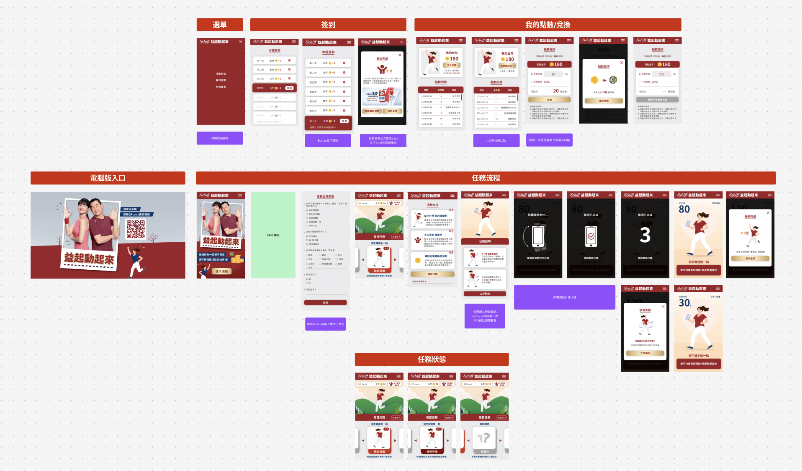

益起動起來 — 旭福活動網站
健康任務互動網站，遊戲化設計，促成消費者高黏著
以「天天健康一點，人生續褔滿點」為核心理念，開發一個結合遊戲化與健康任務的網站互動網站。
目的在於提升用戶回訪頻率與品牌黏著度，透過「健走任務」、「簽到機制」、「金幣兌換」等功能，在運動任務中務獲取金幣，再用任務金幣值換取相對應的益節官網靈活點優惠，讓消費者每日都與品牌發生互動，並最終導流回益節官網完成商品回購。

發現與挑戰
為了讓使用者能夠主動參與並長期投入互動任務，觀察到三個設計上的關鍵挑戰：
- 使用者參與意願：如何設計既簡單又貼近日常的任務？
- 技術門檻：考量使用者手機型號差異，需提供兼容性的任務感應機制。
- 建立獎勵動機與導購連結：點數兌換機制如何能有效轉化為實際的官網回購行為？
研究執行
針對目標族群（40歲以上保健族群）制定出以下設計主軸：
- 將活動導流入口設置於 LINE OA，結合官方帳號的高觸達率與用戶黏著
- 免安裝、網頁即可使用，降低技術門檻，讓用戶能快速體驗互動任務。
- 每日任務與簽到制度，建立使用者每日回訪的行為習慣。
- 金幣兌換靈活點，連接至益節官網購物折扣，強化品牌回購動線。

健走擺手任務：簡單又貼近日常的任務，讓消費者「想玩就能玩」
簡單的健走任務，貼近消費者日常生活的情境，鼓勵消費者外出健走與散步，串接手機陀螺儀偵測，打開活動頁面並且大力擺手，就能達到記步效果完成任務。亦設計每日打卡，促進用戶每日回訪，天天運動，累積任務金幣，1金幣能兌換1靈活點，可至益節官網折抵購物。

手機陀螺儀感測擺動次數，降低遊戲門檻
- 任務前問卷蒐集會員運動頻率與年齡，依結果分為輕、中、重三種強度級別。
- 使用手機陀螺儀感測擺動次數，設定三種強度任務（50 / 100 / 200 擺動次數），根據使用者問卷自動預設強度。
- 若使用者手機不支援陀螺儀，系統會自動切換為時間倒數計時模式（30秒 / 1分鐘 / 2分鐘）確保任務能完成。

每日簽到 與 點數兌換導購機制
每天登入可簽到獲得金幣1枚，連續簽到7日額外獲得3枚，增加回訪率。
任務所得金幣可兌換「靈活點」，1金幣=1靈活點，直接折抵於益節官網消費，串接品牌回購機制。